¡Carrera!
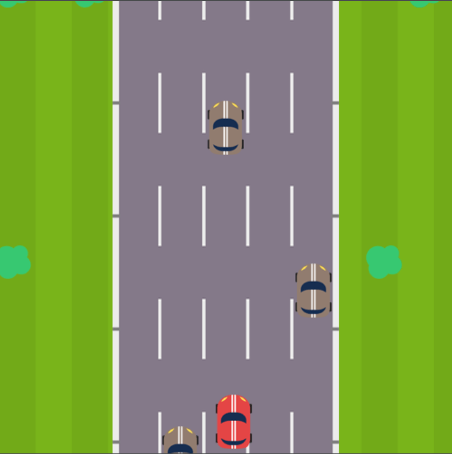
En este tutorial veremos como hacer un juego de carreras como se ve en la imagen, para esto, debemos descargar los sprites que utilizaremos desde aquí
Calle
Lo primero que haremos será construir una calle que de un efecto de que vamos rápido. En este tipo de juegos, el auto no es el que avanza, sino que el fondo es el que se mueve dando a entender al jugador que esta avanzando, cuando no es así.
Por eso, haremos que la calle se mueva hacia abajo constantemente.
Para poder hacer bien este efecto, crearemos 5 actores “calle” que irán bajando hasta determinada
coordenada en y, y cuando lleguen ahí, volverán a arriba a otra coordenada y.
De esta forma, no hará falta crear mas que 5 actores para realizar el efecto que queremos.
Para empezar, eliminaremos todos los objetos que vienen por defecto en el proyecto inicial. Esto lo haremos seleccionando cada actor de la escena, tocando los 3 puntos a la derecha de su nombre y seleccionando la opción “Eliminar”. De la misma forma, eliminaremos la segunda escena, ya que no la usaremos en este tutorial.
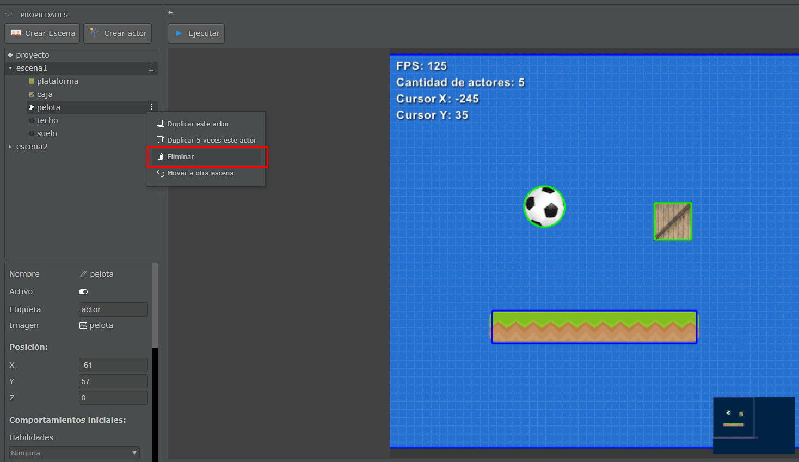
Una vez teniendo el proyecto limpio, seleccionaremos la escena y vamos a cambiar el fondo, para hacer esto, buscaremos en las propiedades de la escena (el panel debajo de los actores) y buscaremos la propiedad “Fondo”.
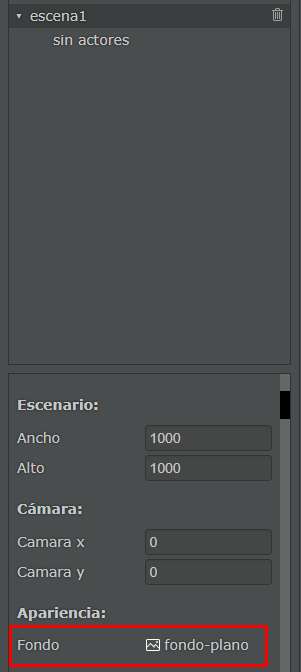
Haremos click en el nombre de la imagen actual(“fondo-plano”) y nos abrirá una pantalla donde podremos seleccionar una imagen propia de pilas o agregar una nueva imagen. Nosotros seleccionaremos la que se muestra a continuación.
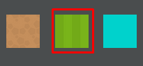
Listo, nuestro fondo ha cambiado a la imagen seleccionada. Lo siguiente que haremos será crear el actor “Calle”. Para esto, vamos al botón “Crear Actor”.
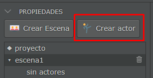
Y seleccionaremos el actor que no tiene imagen.
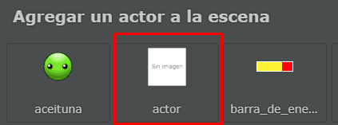
Veremos que nuestro actor ahora aparece en la pantalla. Lo seleccionaremos y buscaremos las propiedades “Nombre” y “Etiqueta”, y a ambas les pondremos “calle”. Además, buscaremos la propiedad “Imagen”, al tocar en el nombre de la imagen nos abrirá la pantalla para cargar imágenes de actores.
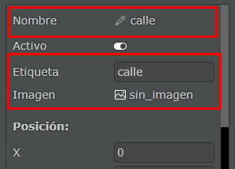
Iremos a la opción “Importar imagen” y seleccionaremos todas las imágenes que descargamos para este tutorial, y seleccionaremos la calle.
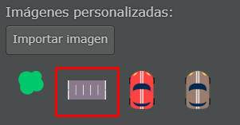
Una vez hecho esto, veremos que nuestro Actor ahora tiene la imagen que acabamos de seleccionar. Ahora buscaremos la propiedad “Centro y” y le pondremos el valor 1.
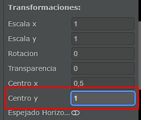
Ahora abriremos la pestaña de Código que está a la derecha.
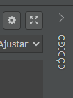
En esta, escribiremos lo siguiente.
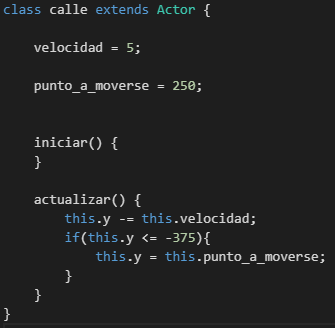
Explicaremos un poco este código por partes:
- Creamos una variable llamada
Velocidada la cual le asignamos el valor5. Esta será la velocidad con la que la calle ira descendiendo en el juego, dando el efecto de que el jugador esta avanzando. - Creamos la variable
punto_a_moversey le asignamos el valor250. Este será el punto en “y” al que se moverá la imagen una vez haya descendido lo suficiente para salir de la pantalla. - El método
actualizaractualiza constantemente el valor de la variableyrestándole la velocidad, lo que efectivamente hace que nuestra calle se mueva. Debajo de esto vemos la condición de que si elyde nuestra calle bajó lo suficiente, esta debe volver al punto que definimos.
Una vez teniendo este código, seleccionamos la calle en el panel de actores, vamos a los 3 puntos a la derecha y tocamos “Duplicar este actor”.
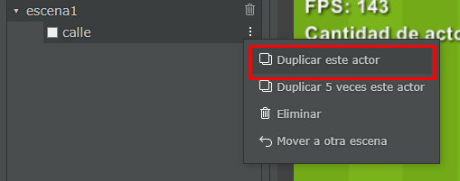
Repetiremos este proceso hasta tener 5 calles en nuestra escena.
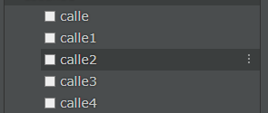
Ahora, a cada calle le ajustaremos la posición en x e y. En x le pondremos 0 a todas, para que
queden en centro de la pantalla. En e iremos cambiando el valor para que queden acomodadas según
nos convenga. Para esto, seleccionaremos cada una de las calles e iremos asignándole en orden los
valores -250, -125, 0, 125, 250 (calle tendrá y=-250, calle1 tendrá y=-125, calle2 0, y así sucesivamente).
De esta forma, nuestra escena debería quedar así.
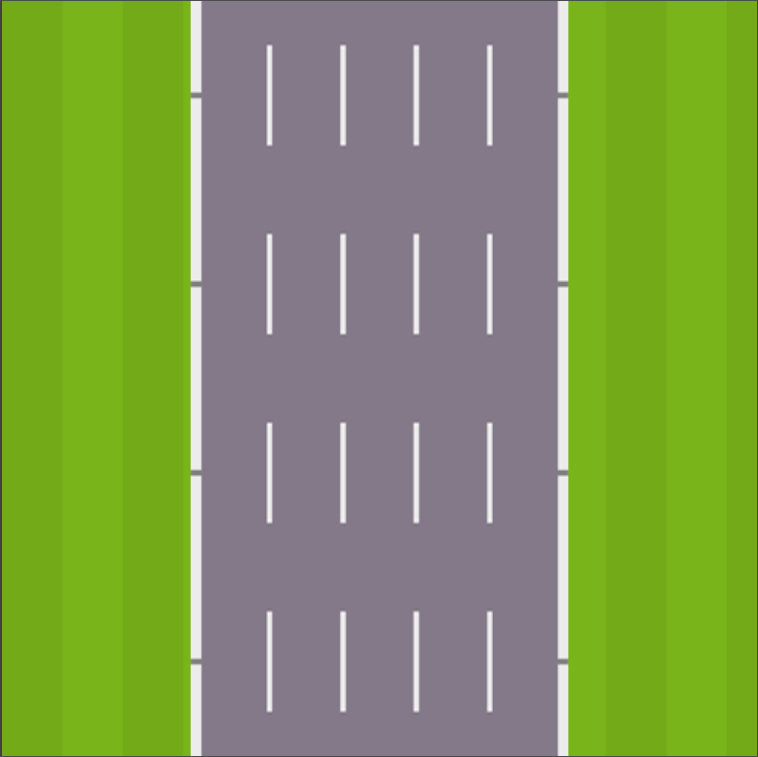
Notaremos que al duplicar la calle, el código que escribimos en el primer actor se copio en todos los demás. Haciendo que todas las calles se comporten exactamente igual. Si ejecutamos ahora el juego, veremos que parece como si estuviésemos avanzando en una calle.
Jugador
Lo que sigue es hacer un actor para nuestro jugador que se pueda mover en la calle que ya hicimos. Para esto, crearemos un nuevo actor “sin imagen”, cambiaremos su nombre y etiqueta por “jugador” y seleccionaremos la imagen del auto rojo que importamos anteriormente.
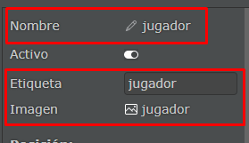
Luego, iremos a la pestaña código de nuestro jugador y escribiremos lo siguiente.
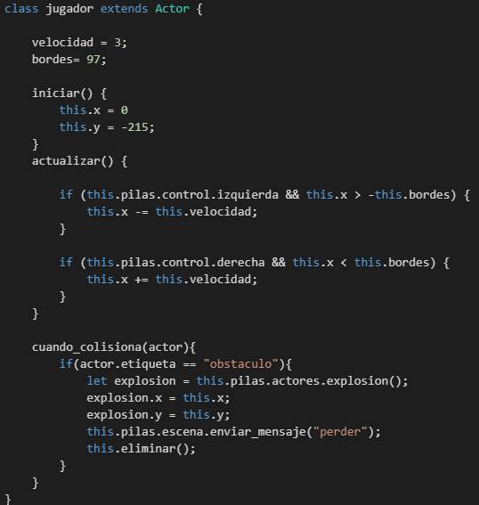
Explicaremos un poco este código:
- Creamos la variable
velocidady le asignamos el valor3, esta será la velocidad a la que el auto se moverá en el eje x. - Creamos la variable
bordesy le asignamos el valor97. Esta variable nos servirá para que el jugador no se pueda salir de la calle. - En el método
iniciarponemos la posición inicial de nuestro jugador, haciendo que empiece enx=0(centro de la pantalla),y=-215(al pie de la pantalla). - En el método
actualizaragregamos una condición para saber si el jugador esta tocando la flecha izquierda (this.pilas.control.izquierda), y además de estar tocando esa tecla, también verificamos que el jugador no se pueda pasar de los bordes (this.x > -this.bordes). - La siguiente condición hace exactamente lo mismo pero para el movimiento hacia la derecha.
- Luego, agregamos un método llamado
cuando_colisionaque recibe como parámetro un actor. Este método será llamado cuando nuestro jugador choque con algo. En nuestro caso, queremos identificar solamente cuando nuestro jugador choque contra otro actor con la etiqueta “obstaculo”, el cual todavía no creamos, pero lo haremos a la brevedad. Si el actor tiene la etiqueta obstáculo, crearemos una explosión con el métodothis.pilas.actores.explosion()y la guardaremos en la variableexplosión, luego la posicionaremos en el lugar en el que esta nuestro actor. Además, le enviaremos un mensaje “perder” a nuestra escena avisándole de que el jugador perdió, para que esta le muestre el cartel de perder y le de la opción de volver a jugar, cosa que todavía no programamos, pero que haremos en un momento. Por ultimo eliminamos al actor.
Una vez terminado ese código, debemos dirigirnos a las propiedades del actor “jugador” y bajar
hasta la parte de físicas. Ahí, seleccionaremos la Figura “Rectángulo”, y cambiaremos los limites
de este rectángulo ajustando las propiedades “Ancho” y “Alto”, poniendo los valores 40 y 60
respectivamente. Además, quitaremos el check “Dinámica”, ya que no queremos que nuestro actor sea
afectado por físicas.
Nuestro jugador debería quedar así:
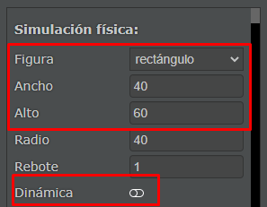
Si ejecutamos el juego ahora, veremos que podremos mover a nuestro actor de un extremo al otro de la calle presionando las flechas izquierda y derecha de nuestro teclado.
Obstáculos
A continuación, crearemos un obstáculo para que nuestro jugador tenga algo que esquivar. Para eso, crearemos un nuevo actor “sin imagen”, asignándole el nombre y la etiqueta “obstaculo”, y cambiando la imagen del actor por la imagen del auto marrón. Además, quitaremos el check “Activo”, ya que este actor no debe iniciar con el juego, sino que lo iremos clonando a medida que pase el tiempo.
Nuestro nuevo actor debería quedar así:
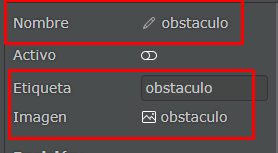
Además, iremos a la parte de propiedades físicas, y le asignaremos los mismos valores que a nuestro actor “jugador”. Estas propiedades eran:
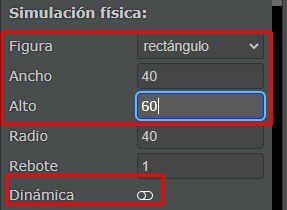
Una vez hecho esto, nos dirigiremos a la pestaña código de nuestro actor y escribiremos lo siguiente.
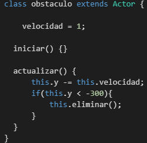
Explicaremos este código a continuación:
- Creamos la variable velocidad, a la cual le asignamos el valor 1. Esta nos servirá para mover al obstáculo hacia abajo. Cabe aclarar que esta velocidad es bastante menor a la de la calle, lo que hace parecer que nuestro jugador va realmente muy rápido.
- Luego, en el método
actualizar, usamos exactamente el mismo código que utilizamos para la calle, con la diferencia de que eliminaremos a estos actores cuando lleguen aly < -300en lugar de-375.
Bien, ya tenemos a nuestro obstáculo, pero si ejecutamos el juego veremos que nunca aparece en nuestra pantalla. Eso es porque todavía no hicimos que la escena genere a estos obstáculos. Pero antes de ir al código de la escena, agregaremos otro actor que nos servirá para mejorar la ambientación de nuestro juego.
Arbustos
Antes de seguir avanzando con la funcionalidad de la escena, crearemos al actor “arbusto” para darle una ambientación a nuestro juego. Para esto, crearemos un nuevo actor “sin imagen”, le cambiaremos el nombre y la etiqueta por “arbusto”, además quitaremos el check inactivo y le pondremos la imagen “arbusto” que importamos al principio del tutorial. Nuestro actor debería quedar así:
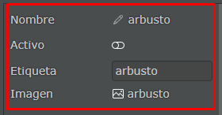
Cabe aclarar que este actor no necesita colisionar con nada, ya que solo aparecerá fuera de la calle. Luego, vamos al código del arbusto y escribiremos lo siguiente.
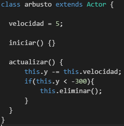
Podemos observar que el código es exactamente igual que el código que utilizamos en el actor “obstáculo”, con la única diferencia de que su velocidad es bastante mayor. Esto es así para que refuerce la idea de que el jugador está yendo realmente rápido.
Si ejecutamos nuestro juego, tampoco veremos ningún cambio hasta el momento, pero eso cambiara cuando modifiquemos la escena, la cual se encargará de clonar obstáculos y arbustos.
Escena
Lo último que nos queda por programar es nuestra escena, la cual será la encargada de que aparezcan obstáculos y arbustos, además de los mensajes de “Game Over” y el botón “Volver a jugar”.
Antes de crear la escena agregaremos un nuevo actor. Buscaremos dentro de los actores de pilas el que se llama “texto”
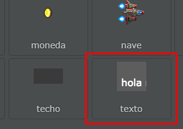
Una vez agregado, le pondremos el nombre y etiqueta “gameover”, y quitaremos el check activo. además, modificaremos la propiedad “Texto” y le pondremos “Game-Over”.
Nuestro actor debería quedar así:
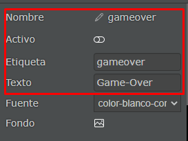
además, iremos a las propiedades “Escala x” y “Escala y”, y le pondremos el valor 3 a ambas.
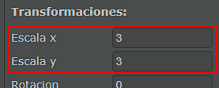
Una vez hecho esto, podemos empezar con el código de la escena.
Seleccionamos nuestra escena y vamos a la pestaña de código. Dentro de esta, escribiremos lo siguiente:
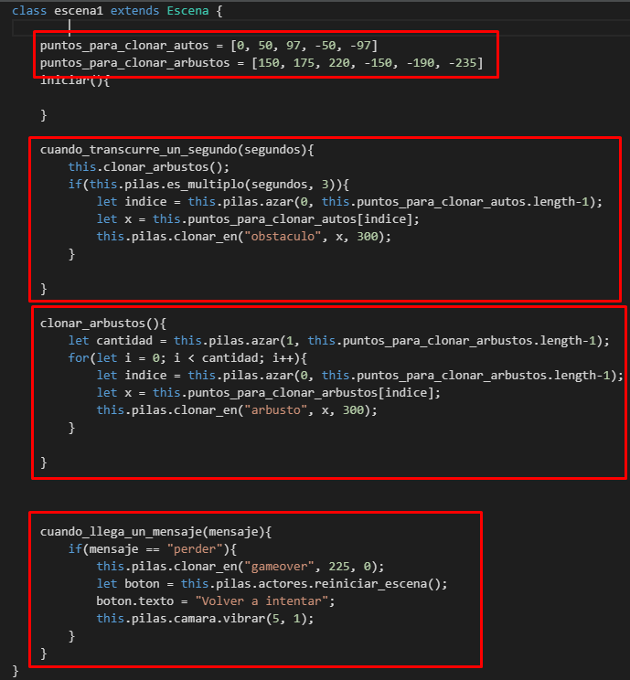
Explicaremos este código a continuación:
- Creamos la variable “puntos_para_clonar_autos”, la cual es una lista de coordenadas en
xque utilizaremos para clonar nuestros obstáculos. - De igual forma, creamos la variable “puntos_para_clonar_arbustos”, la cual contiene coordenadas en
xque utilizaremos para clonar arbustos. - Luego agregaremos el método “cuando_transcurre_un_segundo”. Este método se ejecuta una vez por segundo automáticamente, y nos indica los segundos transcurridos con le parámetro “segundos. Dentro de este método, llamaremos al método
clonar_arbustosel cual explicaremos a continuación, pero básicamente, se encarga de crear arbustos. Debajo de esto, ponemos una condición para que cada 3 segundos la escena cree un obstáculo (utilizamos el métodopilas_es_multiplopara saber si los segundos son múltiplo de3). Si esto se cumple, obtendremos un valor al azar (utilizando la funciónazarde pilas que recibe 2 parámetros numéricos, los cuales representan los limites de un intervalo en el que se generara el numero aleatorio) que este dentro del rango[0, tamaño de la lista de arbustos-1]y lo guardaremos en la variableíndice. Luego, utilizamos esta variable para acceder a algún punto de los que tenemos guardados en la lista, y lo guardamos en la variablex. Por último, utilizamos la función de pilasclonar_en(la cual recibe 3 parámetros, el primero es el nombre del actor a clonar, y los otros dos son los valores dexeyrespectivamente) para clonar nuestro “obstáculo” en el puntoxque haya sido elegido aleatoriamente, y en el valory=300, lo que significa que estará fuera de la pantalla (por encima para ser exactos) lo que evita que veamos como el obstáculo aparece de repente. - El método “clonar_arbustos” lleva una lógica muy parecida a como creamos nuestros obstáculos, con la diferencia de que se ejecutara cada segundo; además, este método obtiene primero un valor aleatorio entre
0y el tamaño de nuestra lista de puntos para generar arbustos -1, el cual será la cantidad de arbustos que crearemos en ese instante de tiempo. Para hacer esto, utilizamos un ciclo for que ejecutara su interior la cantidad “cantidad” que salió aleatoriamente en la línea anterior. Luego, siguiendo la lógica utilizada para crear obstáculos, clonaremos los arbustos en algún punto aleatorio. - Por ultimo, el método
cuando_llega_un_mensajeserá el encargado de recibir el mensaje “perder” que le envía el Actor del jugador al chocar con un obstáculo. Para eso, dentro del método comparamos el mensaje recibido con “perder”, si esto es cierto, clonaremos al actor “gameover” (el mensaje de perder) en la coordenada(225, 0). También crearemos al botón “reiniciar_escena” para que el jugador pueda volver a jugar, utilizando el métodopilas.actores.reiniciar_escena(), el cual hace este trabajo por nosotros. Cambiaremos el mensaje del botón por “Volver a intentar” y por ultimo haremos que la cámara vibre con el métodopilas.camara.vibrar(El cual recibe como parámetro la intensidad de la vibración y el tiempo que debe vibrar) haciendo que vibre con intensidad 5 por 1 segundo.
Si ejecutamos nuestro juego ahora, veremos que aparecerán obstáculos y arbustos en nuestra escena a medida que el jugador “avanza” en la calle.
Espero que les haya gustado este tutorial y se haya entendido. Si tienen alguna duda pueden consultarla en el foro de pilas.
¡Saludos!